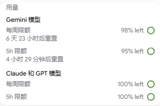
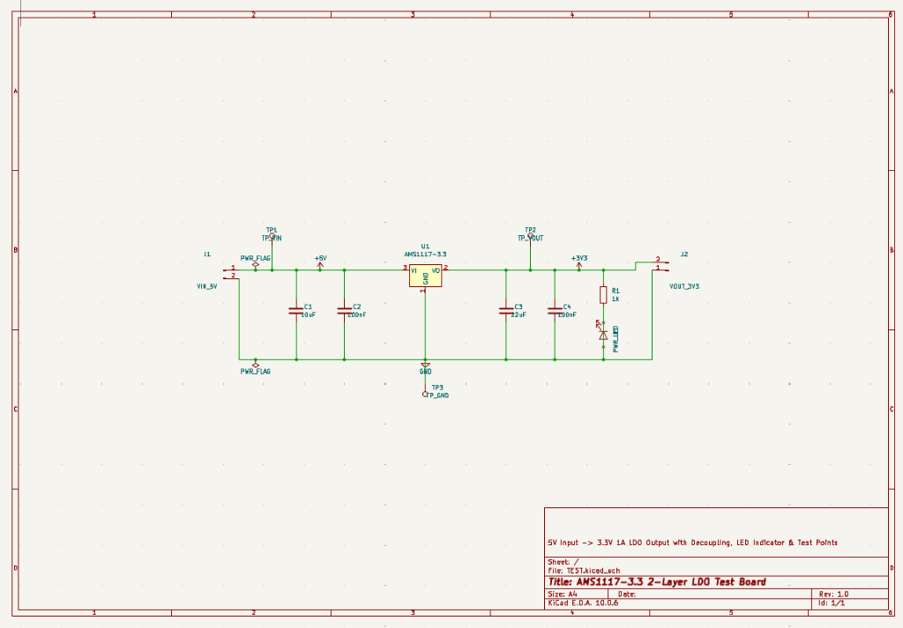
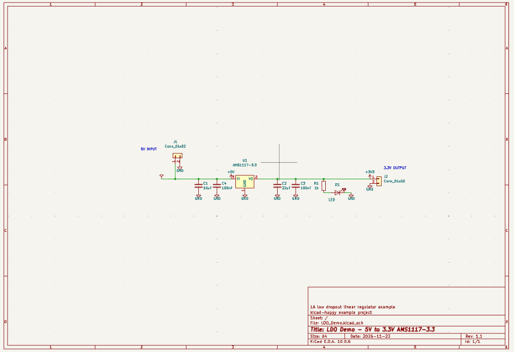
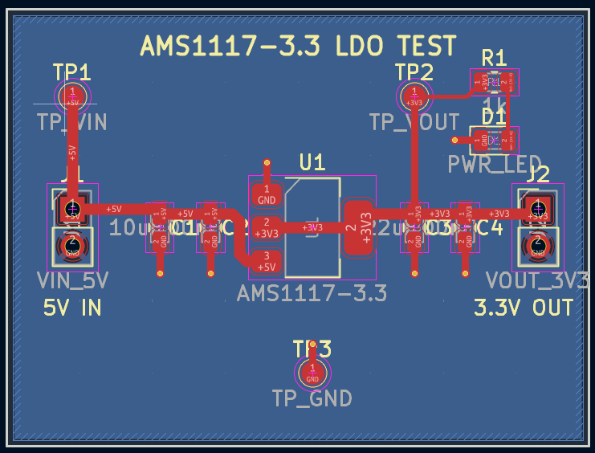
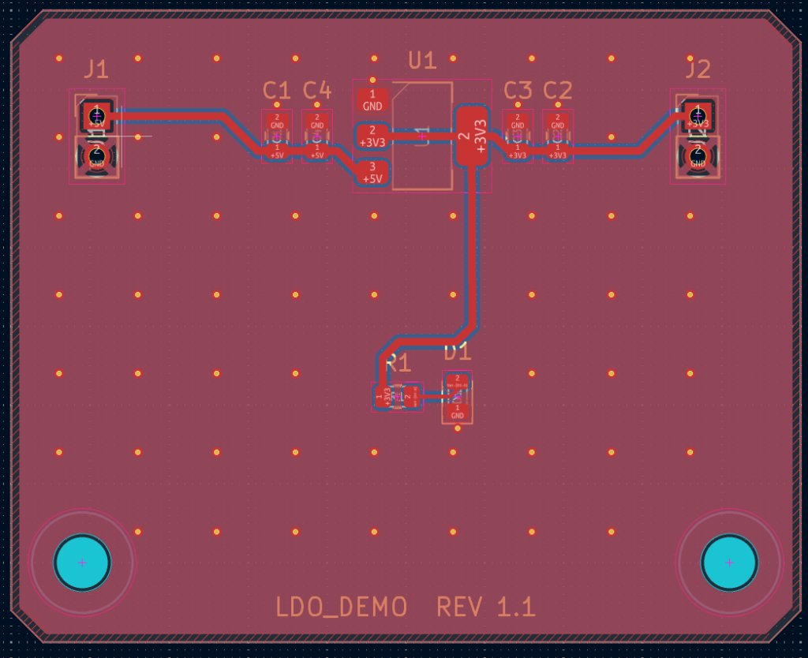

同样是让 AI 用 KiCad 10.0 从原理图一路画到双层 PCB，一次是 Gemini 4 Neon（Antigravity） 无额外 Skill 直接“裸跑”，一次是 DeepSeek 4.1 Flash（WorkBuddy） 配合专用 KiCad Skill 进行强化审核。对比两者的最终产出，差距比预想的还要明显——这不仅是模型能力的对比，更是“通用推理”与“工程规范 Skill”之间的一次直观碰撞。
一、测试背景与基本条件
本次测试选用硬件工程师最熟悉的经典入门电源电路——5V 转 3.3V（1A）AMS1117-3.3 双层 LDO 测试板，包含输入输出排针、输入/输出退耦电容、电源指示 LED，要求从原理图绘制到双层 PCB 布局布线并保证电气规则与设计规则通过。
| 对比维度 | Gemini 4 Neon（Low） | DeepSeek 4.1 Flash |
|---|---|---|
| 运行平台 | Antigravity 2.0 桌面端 | WorkBuddy |
| 是否使用专有 Skill | 无（纯模型裸跑，自动调用 kicad-cli） |
有（引入 KiCad 专用 Skill 强化审核） |
| 人工干预 | 仅在最后提示一次：将 90° 直角走线改为 45° 斜角 | 通过 Skill 流程自动完成规范审查与优化 |
| 原理图表现 | 完整规范，主动补齐 PWR_FLAG 与 3 个测试点（TP1~TP3） |
结构清爽，分立 GND 符号，附带输入/输出文字标注 |
| PCB 工艺细节 | 左进右出功率流清晰、底层整面 GND 铺铜；无倒角/安装孔，部分电容丝印重叠 | 四角 45° 倒角 + 双安装孔 + 整板缝合地孔阵列，位号丝印极干净、零重叠 |
| 走线规范 | 首轮默认 90° 直角，人工提醒 1 次后全部改为 45° | 全程标准 45° 斜角走线，布线整洁 |
| ERC / DRC 校验 | kicad-cli 实测 0 错误、0 警告、0 未连接 |
经 Skill 审核通过 |
二、Gemini 4 Neon（Antigravity）完整过程复盘
在 Antigravity 中，我只给了一句非常宽泛的指令：“连接我打开的 kicad 工程，并绘制一个双层 LDO 测试板，从原理图到 PCB”。没有附加任何 KiCad 规范 Skill，全程看模型自己的发挥：
- 首轮生成（09:18 → 09:25，约 7 分钟）：模型自动定位到本机已打开的 KiCad 10.0 工程，生成了完整的
TEST.kicad_sch原理图与40 mm × 30 mm双层 PCB，并主动调用kicad-cli跑通了 ERC（0 错误 0 警告）和 DRC（0 违规、0 未连接、0 封装错误）。 - 二轮优化（09:28 → 09:30，约 1 分 50 秒）：打开 PCB 检查时发现走线都是 90° 直角，提醒一句“走线都是直角，不是 45° 走线”后，模型迅速把所有拐角改成了标准 45° 斜角并重新通过 DRC。
- 额度消耗：完成前面客户端配置加上本次完整 KiCad 原理图/PCB/校验迭代后，5 小时限额仍剩余 95%，每周限额剩余 98%，成本非常低。

三、原理图对比
两份原理图在电气连接上都非常准确，都采用了经典的输入 10µF + 100nF、输出 22µF + 100nF 退耦搭配以及 1kΩ + LED 电源指示。区别在于风格细节：Gemini 主动考虑到了实验室调试需求，额外加了 TP1 / TP2 / TP3 三个测试点和 PWR_FLAG；而 DeepSeek 的图面布局更紧凑，使用独立 GND 符号，阅读起来更清爽。


四、PCB 布局与工艺对比（差距最明显）
真正拉开差距的是 PCB 阶段。把两张 PCB 放在一起看，可以一眼看出“能用、能过 DRC”与“接近工程打样标准”之间的区别：


- 板框与机械结构：Gemini 给出了标准矩形板框；DeepSeek 在 Skill 的约束下主动做了四角 45° 倒角，并在底部对称布置了 2 个定位安装孔，更像一块真正准备发去打样的测试板。
- 铺铜与过孔（Via Stitching）：Gemini 在底层做了整面 GND 铺铜并给每个 GND 焊盘就近打孔；DeepSeek 则更进一步，在整板布设了均匀整齐的缝合地孔阵列，散热与回流路径更扎实。
- 丝印可读性：Gemini 保留了所有元器件的值文本（
10uF、22uF等），导致C1/C2、C3/C4丝印互相重叠，且TP1-J1走线压在丝印上；DeepSeek 隐藏了多余的容值丝印，只保留清晰对齐的位号与底部版本号LDO_DEMO REV 1.1，板面非常干净。
1. Gemini 4 Neon（Antigravity） 的裸跑能力很强：不依赖任何外部规则，就能自己摸清本机 KiCad 工程、写出合法文件并用
kicad-cli 跑通 0 错误 ERC/DRC，且额度消耗极低；但它默认只保证“电气正确”，不会自动替你把板子做到“工艺美观”。2. DeepSeek 4.1 Flash（WorkBuddy） 搭配专用 KiCad Skill 强化审核 后，成板质量直接上了一个台阶——倒角、安装孔、缝合过孔、丝印防重叠、45° 走线全都落到了实处。
3. 下一步启发：AI 画 PCB，模型底座决定下限（能不能跑通），工程 Skill 决定上限（像不像老工程师画的板子）。后续可以把这套 KiCad 工艺审核 Skill 也沉淀到 Antigravity 里，看看强模型 + 强 Skill 结合能达到什么水准。